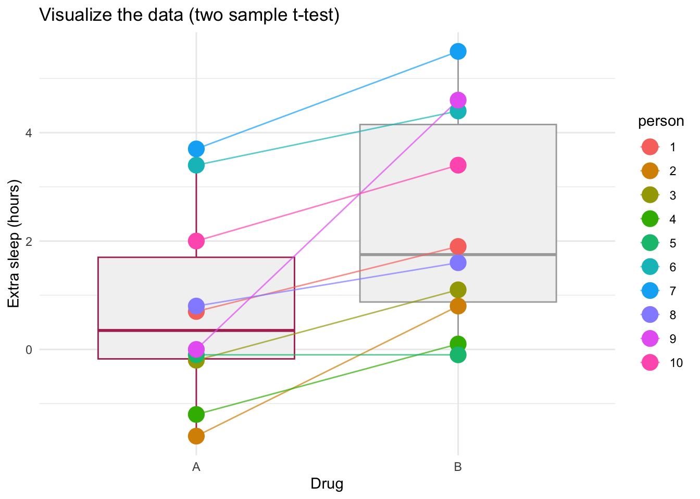

24 Wed Nov 04 - Two categorical variables: fixed and random effects
We will consider two categorical variables: one fixed and one random effect. These analysis have various names:
24.1 Paired t-test
The sleep study data that we have previously considered found that drug A did not increase sleep and that drug B did not have an effect that was different than drug B.
We assessed these hypotheses by calculating an F-statistic that evaluated whether there was a difference in the amount of variation in the response variable that is unexplained (i.e., the variation in the residual) and the variation explained by the drug.
However, what if some of this unexplained variation was actually explained by individual differences? If we include ‘person’ as a random effect, then differences in sleep between individuals might explain some of the variation in the response variable extra sleep. Then, less of the variation is unexplained and it might be possible that we can find an effect of the drugs, when we control for these individual differences in sleep.
Recall the sleep data:
sleep.data2 = read.csv("https://raw.githubusercontent.com/ahurford/biol-4605-data/refs/heads/main/data/extrasleep.csv")
sleep.data2## drug extra.sleep person
## 1 A 0.7 1
## 2 A -1.6 2
## 3 A -0.2 3
## 4 A -1.2 4
## 5 A -0.1 5
## 6 A 3.4 6
## 7 A 3.7 7
## 8 A 0.8 8
## 9 A 0.0 9
## 10 A 2.0 10
## 11 B 1.9 1
## 12 B 0.8 2
## 13 B 1.1 3
## 14 B 0.1 4
## 15 B -0.1 5
## 16 B 4.4 6
## 17 B 5.5 7
## 18 B 1.6 8
## 19 B 4.6 9
## 20 B 3.4 10For this modelling, we need to make sure that R treats person as a label and not a quantitative property. To do this:
We do not need to revisit plotting these data or examining hypotheses because we did this in previous lectures. However, a useful plot when treatment levels of the fixed effect are linked by a random factor is to visualize this linkage:
library(ggplot2)
ggplot(sleep.data2, aes(x = factor(drug), y = extra.sleep)) +
# 1. Add the box plot layer
geom_boxplot(
outlier.shape = NA, # CRITICAL: Prevents duplicate plotting of outliers
fill = "grey95", # Light fill to keep it as a background summary
color = c("maroon","darkgray") # Muted border color
) +
geom_line(aes(group = person, color = person), alpha = 0.7)+
# 2. Add the strip plot (jittered points) layer
geom_jitter(aes(color=person),
position = position_jitter(width = 0, height = 0), # Controls data spreading - we need not spreading for this paired plot to work.
size = 5, # Modify point size
) +
labs(
x = "Drug",
y = "Extra sleep (hours)",
title = "Visualize the data (two sample t-test)"
)+theme_minimal()
The slope of these paired lines is generally all positive, showing that most people do get more sleep with drug B. The unpaired t-test assesss the effect of Drug A and Drug B by assuming random associations. Would these random associations also have nearly all positive slopes? Could this lack of consideration of individual variation be the reason why we did not find a difference in the drugs?
We are still consideration the same null hypothesis: that the mean extra sleep for Drug A and Drug B are the same. Our model is different, however, because it includes another explanatory variable.
\[ S = \mu + \beta_1 X_D + \beta_2 X_P + \epsilon . \]
For this model we do not include an interaction term, because we do not have enough degrees of freedom to estimate the main effects and the interaction effect. This will always be the case for a paired t-test. Therefore, we do not include the interaction term. Note that \(X_P\) is an indicator variable corresponding to the particular person that we are considering.
24.2 Execute the analysis
When we to estimate the parameters for a mixed model, such as this i.e., involving a fixed and a random factor, we need to load the lme4 package if we are using R. Recall our previous lecture that involved random effects. Note that it is necessary to write the round brackets around the random factor.
require(lme4)
require(lmerTest)
# fit the mixed effects model
mixed.mod = lmer(extra.sleep~drug+(1|person),data = sleep.data2)
summary(mixed.mod)## Linear mixed model fit by REML. t-tests use Satterthwaite's method [
## lmerModLmerTest]
## Formula: extra.sleep ~ drug + (1 | person)
## Data: sleep.data2
##
## REML criterion at convergence: 70
##
## Scaled residuals:
## Min 1Q Median 3Q Max
## -1.63372 -0.34157 0.03346 0.31511 1.83859
##
## Random effects:
## Groups Name Variance Std.Dev.
## person (Intercept) 2.8483 1.6877
## Residual 0.7564 0.8697
## Number of obs: 20, groups: person, 10
##
## Fixed effects:
## Estimate Std. Error df t value Pr(>|t|)
## (Intercept) 0.7500 0.6004 11.0814 1.249 0.23735
## drugB 1.5800 0.3890 9.0000 4.062 0.00283 **
## ---
## Signif. codes: 0 '***' 0.001 '**' 0.01 '*' 0.05 '.' 0.1 ' ' 1
##
## Correlation of Fixed Effects:
## (Intr)
## drugB -0.324## Type III Analysis of Variance Table with Satterthwaite's method
## Sum Sq Mean Sq NumDF DenDF F value Pr(>F)
## drug 12.482 12.482 1 9 16.501 0.002833 **
## ---
## Signif. codes: 0 '***' 0.001 '**' 0.01 '*' 0.05 '.' 0.1 ' ' 1## Groups Name Std.Dev.
## person (Intercept) 1.68770
## Residual 0.8697424.3 Interpret the results
The lme4 package does not return p-values because traditional F-tests rely on clear-cut degrees of freedom, but with crossed or nested random effects, those boundaries blur. One option is to load the lmerTest package before running the model, which automatically overrides lme4’s functions to calculate p-values using the Satterthwaite approximation (which is highly accurate and widely accepted). The purpose of this example was to show why is strong analysis choice can be to include a random effect. While, we would only report the amount of variation explained by the random effect: 2.8483 hours\(^2\) having some additional variation explained, and no longer in the residual, improves our ability to detect the fixed effect.
We note that our estimate of the effects of Drug A and Drug B are the same and when we did this analysis as an unpaired t-test (i.e., without the random effect), but when we include the random effect less of the variation is unexplained, and we conclude that there is a difference in how much extra sleep people get on drug A versus drug B. This finding suggests that it is important to run this clinical trial by testing both Drug A and Drug B on the same person because without the additional variable describing ‘person’ we cannot account for individual variation in extra sleep.
A remark on dropping the interaction term.
Degrees of freedom (total): 20 - 1
Degrees of freedom (drug): 2 levels - 1
Degrees of freedom (person): 10 different people - 1
This leaves 19 - 1 - 9 = 9 degrees of freedom in the residual.
If we include an interaction term in the model then:
- Degrees of freedom (interaction): (2-1) \(\times\) (10-1) = 9.
As such, if we include the interaction term there are no degrees of freedom in the residual. For this reason, the mixed effects model does not include an interaction term.
24.4 Can’t we just do a paired t-test?
require(dplyr)
drugA = sleep.data2%>%filter(drug=="A")%>%pull(extra.sleep)
drugB = sleep.data2%>%filter(drug=="B")%>%pull(extra.sleep)
t.test(drugA, drugB, paired = TRUE)##
## Paired t-test
##
## data: drugA and drugB
## t = -4.0621, df = 9, p-value = 0.002833
## alternative hypothesis: true mean difference is not equal to 0
## 95 percent confidence interval:
## -2.4598858 -0.7001142
## sample estimates:
## mean difference
## -1.58##
## Welch Two Sample t-test
##
## data: drugA and drugB
## t = -1.8608, df = 17.776, p-value = 0.07939
## alternative hypothesis: true difference in means is not equal to 0
## 95 percent confidence interval:
## -3.3654832 0.2054832
## sample estimates:
## mean of x mean of y
## 0.75 2.33We recover the same conlcusion that the unexplained variation is different from the explained variation only when we explain some of the variation with person, however, our approach has been much more powerful, in that we can now understand that a paired t-test is a type of mixed effects model, and we can apply our method to more general settings such as randomized blocks and repeated measures.